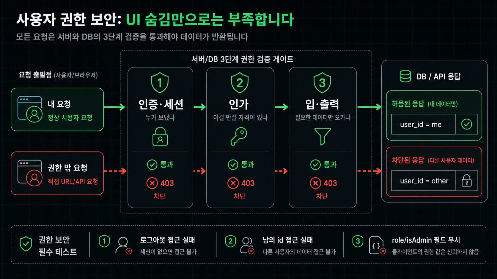
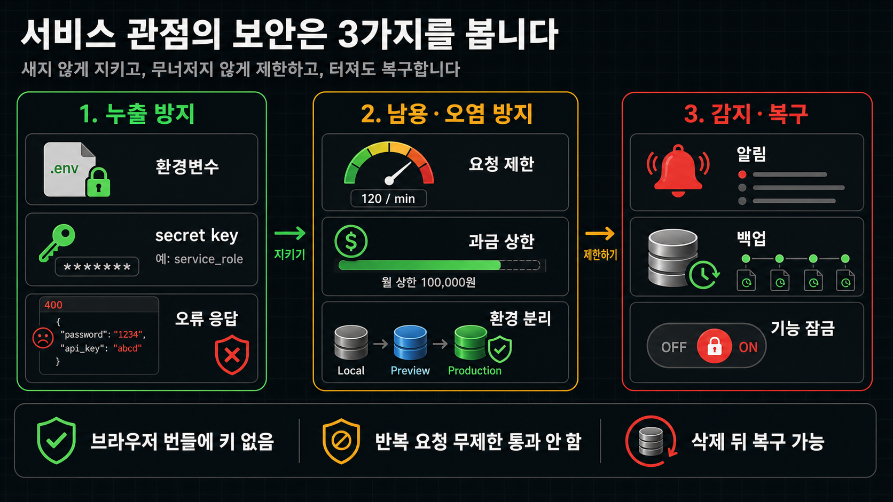

서비스 보안 점검하기
보안과 권한 체크리스트
첫 사용자 공개 전 API 키, 권한, 데이터베이스 보안, 관리자 접근을 어떤 기준으로 나눠서 볼지 정리합니다.
얻어갈 것
- 사용자 권한 관점과 우리 서비스 관점, 두 축으로 나눠서 무엇을 확인해야 하는지 파악합니다.
- 다음 레슨에서 이 체크리스트를 실제 점검 skill에 넘겨 돌려봅니다.
두 가지 관점
보안은 막연하게 "해킹 안 당하기"로 생각하면 너무 커집니다. 그래서 이 레슨은 딱 두 개의 구체적인 질문으로 쪼갭니다. 하나는 남의 눈에서, 하나는 우리 서비스 자신에서 봅니다.
| 관점 | 질문 | 주로 보는 것 |
|---|---|---|
| 사용자 권한 관점 | 이 사용자가 자기 권한 밖의 화면, API, 데이터를 볼 수 있나요? | 인증·세션, 인가(소유자·관리자·파일), 입·출력 데이터 |
| 우리 서비스 관점 | 서비스 자체에서 키, DB, 로그, 사고 대응이 새거나 크게 실패할 지점이 있나요? | 누출 방지(키·환경변수·오류 응답), 남용·오염(요청 제한·환경 분리), 감지·복구(백업·알림·사고 대응) |
두 관점은 막는 방법이 다릅니다. 앞은 권한 코드로 막고, 뒤는 설정과 운영으로 막습니다. 그래서 나눠서 봅니다. 특히 첫 번째 관점은 이 한 문장으로 좁혀집니다.
사용자 권한 관점의 보안
사용자 권한 관점은 먼저 누가 무엇을 할 수 있는지 역할을 나눠 두고, 그 설계가 코드에서 실제로 지켜지는지 확인하는 순서입니다.
먼저 역할부터 나누기 (권한 매트릭스)
기능을 만들기 전에 누가 무엇을 볼 수 있고 실행할 수 있는지 먼저 나눠 둡니다. 느좋카페 기준으로는 이렇게 나눕니다.
- 비로그인 사용자: 공개 장소 목록과 상세만 볼 수 있습니다.
- 일반 사용자: 본인 북마크, 본인 제보, 본인 수정 요청만 만들고 볼 수 있습니다.
- 관리자: 유저, 장소, 제보, 수정 요청을 확인하고 운영 액션을 할 수 있습니다.
이렇게 나눈 권한이 코드에서 지켜지는지는, 요청 하나가 들어와서 응답이 나갈 때까지 세 관문으로 확인합니다. 누가 보냈는지, 이걸 만질 자격이 있는지, 오가는 데이터가 딱 필요한 만큼인지입니다.

관문 1 — 누가 보냈나 (인증·세션)
가장 먼저 이 요청을 보낸 사람이 누구인지를 서버가 확인하는지 봅니다.
| 확인할 것 | 실패 테스트 |
|---|---|
| 비로그인/로그인 화면 분리, 서버에서 사용자 id 재확인. 클라이언트에서 버튼·화면을 숨기는 건 방어가 아닙니다. | 로그아웃한 뒤 보호된 페이지와 API 접근이 실패합니다. |
관문 2 — 이걸 만질 자격이 있나 (인가)
로그인한 사람이라도 이 리소스에 접근할 자격이 있는지를 API와 데이터 계층에서 확인하는지 봅니다. 여기가 사용자 권한 보안의 핵심입니다.
| 영역 | 확인할 것 | 실패 테스트 |
|---|---|---|
| 내 것만 (소유자) | API와 DB query가 row 소유자를 확인 | 남의 id로 조회·수정·삭제가 실패합니다. |
| 관리자만 | /admin, 관리자 API, 관리자 데이터 렌더링에서 관리자 권한 확인 | 일반 로그인 계정으로 /admin과 관리자 API 접근이 실패합니다. |
| 파일·업로드 | 업로드한 파일·이미지가 URL만으로 열리지 않고 권한 확인을 거치는지 확인 | 남의 파일 URL을 직접 열어도 실패합니다. |
| 데이터 계층 이중방어 | policy 함수, Supabase라면 RLS로 DB에서 한 번 더 확인 | 앱 코드를 우회해 DB에 직접 물어도 남의 row가 나오지 않습니다. |
관문 3 — 오가는 데이터가 딱 필요한 만큼인가 (입·출력)
마지막으로 들어오는 요청과 나가는 응답에 불필요한 데이터가 섞이지 않는지 봅니다.
| 방향 | 확인할 것 | 실패 테스트 |
|---|---|---|
| 들어오는 요청 | 요청 body를 그대로 DB에 반영하지 않고 허용한 필드만 골라 쓰는지 확인 | 요청에 role, isAdmin처럼 원래 없는 필드를 끼워 보내도 반영되지 않습니다. |
| 나가는 응답 | 화면에 없는 개인정보·필드까지 응답에 담지 않는지 확인 (select * 주의) | 목록·상세 API가 남의 이메일·전화 같은 불필요한 필드를 담지 않습니다. |
두 방향 모두 AI가 생성한 코드에서 자주 빠집니다. 필요한 필드만 골라 넣고, 골라 내보내는지 확인합니다.
우리 서비스 관점의 보안
우리 서비스 관점에서는 서비스 자체가 새거나 크게 실패할 지점을 봅니다. 평소에 안 새게 지키고, 남용·실수에 무너지지 않게 막고, 사고가 나도 잃지 않고 빨리 복구할 수 있는지 세 덩이로 봅니다.

새지 않게 (누출 방지)
키와 내부 정보가 밖으로 새지 않는지 봅니다.
| 영역 | 확인할 것 | 실패 테스트 |
|---|---|---|
| 비밀키와 환경변수 | .env* Git 이력, NEXT_PUBLIC_, 서버 전용 secret key(Supabase service_role 등) | 브라우저 번들, GitHub, 배포 로그에서 키가 보이지 않습니다. |
| 오류 응답 | DB 테이블명, stack trace, secret 값이 응답에 나오지 않는지 확인 | 실패 요청을 보내도 민감 정보가 응답에 섞이지 않습니다. |
남용·오염에 무너지지 않게
외부 남용과 내부 실수로 서비스가 망가지지 않는지 봅니다.
| 영역 | 확인할 것 | 실패 테스트 |
|---|---|---|
| 요청 제한 | 로그인, AI 호출, 이메일 발송처럼 비용·어뷰징에 취약한 요청에 제한과 과금 상한 | 짧은 시간에 같은 요청을 반복해도 무제한으로 통과하지 않습니다. |
| 운영 환경 분리 | 로컬, Preview, Production의 API 키와 DB가 분리되어 있는지 확인 | 로컬 작업이 운영 DB나 운영 외부 API를 건드리지 않습니다. |
터져도 잃지 않고 빨리 (감지·복구·대응)
사고를 빨리 알아채고, 데이터를 잃지 않고, 바로 대응할 수 있는지 봅니다.
| 영역 | 확인할 것 | 실패 테스트 |
|---|---|---|
| 감지·알림 | 비용 급증, 에러, 비정상 트래픽을 알려주는 알림·모니터링이 있는지 확인 | 문제가 생기면 청구서가 아니라 알림으로 먼저 알게 됩니다. |
| 백업·복구 | DB 자동 백업 범위, 위험한 마이그레이션 전 백업, 복구 절차를 아는지 확인 | 잘못된 마이그레이션이나 삭제 뒤에도 데이터를 되돌릴 수 있습니다. |
| 사고 대응 | 키 재발급 위치, 쓰기 기능 임시 중지, 재확인 계정 | 키 교체와 기능 잠금을 바로 실행할 수 있습니다. |
마무리
- 기본적인 보안을 점검하려면, 사용자 권한 관점(누가 → 자격 → 오가는 데이터)과 우리 서비스 관점(누출 방지 → 남용·오염 → 감지·복구)에서 함께 봐야 합니다.
- 다음 레슨에서는 이 체크리스트를 실제 점검 skill에 넘겨 돌려보고, 결과에서 무엇부터 봐야 하는지 확인합니다.